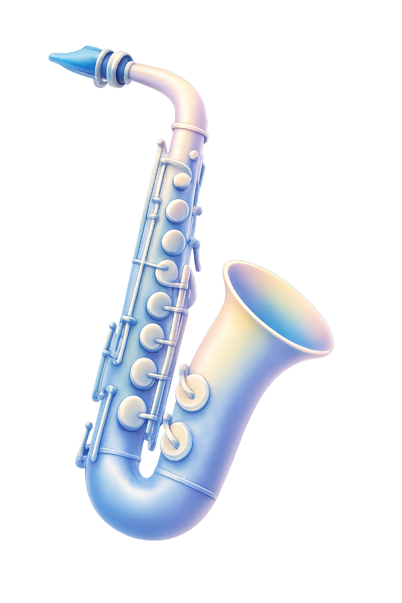

夜幕低垂，說書人化身嚮導，以音符翻開神祕物語。邀請您在星群下，聆聽關於夢與記憶的幻影奇談。
Sandpaper Ballet - Leroy Anderson (arr. Hans van der Heide)
撰文：劉治平
《砂紙芭蕾》是美國作曲家勒羅伊．安德森 (Leroy Anderson) 於 1954 年創作的作品，也是他眾多幽默音樂作品中頗具代表性的一首。Anderson 擅長將日常生活中的聲音化為音樂素材，而《砂紙芭蕾》正是最具創意的例子之一。

他以砂紙摩擦所產生的聲響取代傳統打擊樂器，靈感來自早期美國歌舞雜耍 (Vaudeville) 中的 soft-shoe dance。這種舞蹈沒有華麗的舞鞋，而是透過鞋底與地板摩擦，形成富有節奏感的腳步聲。Anderson 將這樣的聲音轉化為音樂語言，使砂紙不只是特殊效果，而是如同舞者腳步般，成為推動整首作品律動的重要角色。
全曲充滿輕鬆詼諧的氛圍，輕巧靈動的旋律在各聲部之間流轉，搭配富有彈性的節奏，彷彿一場妙趣橫生的舞蹈正在舞台上展開。
《砂紙芭蕾》之所以歷久彌新，不僅因為它運用了砂紙這項非傳統樂器，更因為 Anderson並未將新奇的音色當作噱頭，而是賦予它清楚的音樂角色。砂紙與樂團之間的對話，使觀眾彷彿不只是聆聽一首樂曲，而是在聲音之中看見舞者輕盈穿梭於舞台的身影。
這首作品並非為舞蹈伴奏，而是讓音樂本身成為舞蹈；即使沒有真正的舞者，觀眾仍能透過旋律、節奏與砂紙的摩擦聲，在腦海中想像一場輕盈而詼諧的演出。透過簡單的素材與巧妙的配器，作曲家證明音樂的趣味不一定來自宏大的編制或複雜的技巧，而是源於對生活細節的敏銳觀察，以及將平凡事物化為藝術的想像力。

夜幕低垂，說書人化身嚮導，以音符翻開神祕物語。邀請您在星群下，聆聽關於夢與記憶的幻影奇談。